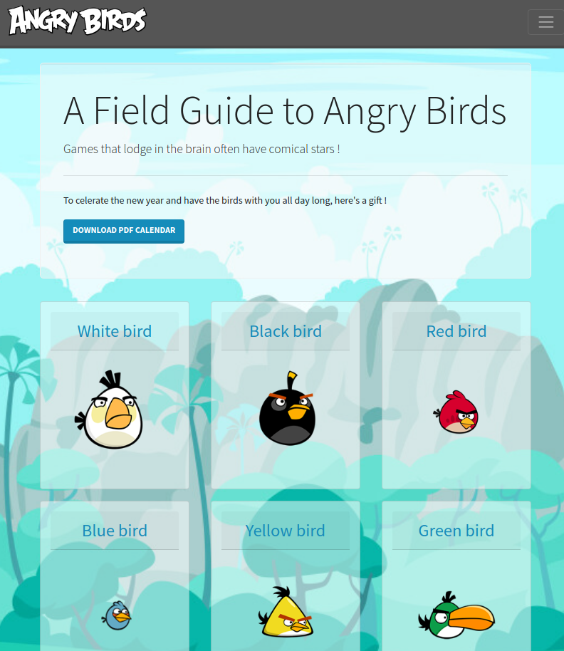
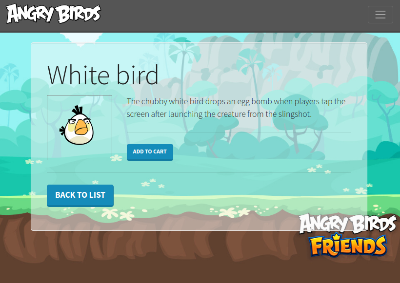

Vous allez mettre en place un site de fan sur les Angry Birds ! Analysons les contenus fournis pour entrevoir les fonctionnalités attendues. Les étapes de l'exercice sont détaillées ensuite.


Vous travaillerez à partir de la documentation Symfony : Getting Started.
✋ Toutes les infos sont contenues dans les chapitres du Getting Started. Pas besoin d'aller chercher les infos ailleurs pour le moment.
Installation
Installer un nouveau projet Symfony "skeleton", via l'utilitaire symfony : composer create-project symfony/skeleton angrybirds et entrer dans le dossier du projet avec cd angrybirds.
✋ Si besoin de passer par Apache, on installe le
.htaccessviacomposer require apache-pack.
✋ Sinon, on peut utiliser le serveur PHPphp -S 0.0.0.0:8000 -t public.
Les routes
✋ Lister les pages attendues afin d'en déduire les routes (URL, contrôleur, méthode, paramètres, description). Les noter dans un fichier de routes en markdown par ex.
Les assets
Dans le dossier public créer 2 sous-dossiers images et files et importer les fichiers de ressources dans leurs dossiers respectifs.
On s'occupera du fichier
data.phpdans quelques minutes.✋ A ce stade la structure de notre site est en place, il ne nous reste plus qu'à coder les fonctionnalités !
Liste des oiseaux
Aux étapes suivantes, créer les contrôleurs, méthodes et templates nécessaires.
composer require annotationsdebug:router.dump() depuis la page d'accueil.data.php (Model) : Pour ce faire, trouver le moyen d'intégrer les données fournies dans le projet Symfo (on cherchera une solution en PHP objet de préféfence 😉). Pas de bases de données pour le moment, on voit ça en S02 😉composer require twig 🖌Vous souhaitez des infos sur l'exécution de votre code ? =>
composer require profiler🎉
Liens et images
Dans la boucle du template de liste :
Show bird
Routes (suite)
Que faire si le paramètre id de la route bird_show n'est pas au format numérique ? Essayez de passer une chaine de caractères dans l'URL pour voir.
Trouver le moyen de forcer le téléchargement direct du PDF sans chargement d'une nouvelle page (rubrique Controllers > Streaming File Responses).
API
Cela n'est pas précisé dans les captures mais vous pourriez proposer un accès API/JSON qui renvoie les données des oiseaux vers une appli front.
Front: CSS et Twig cycle()